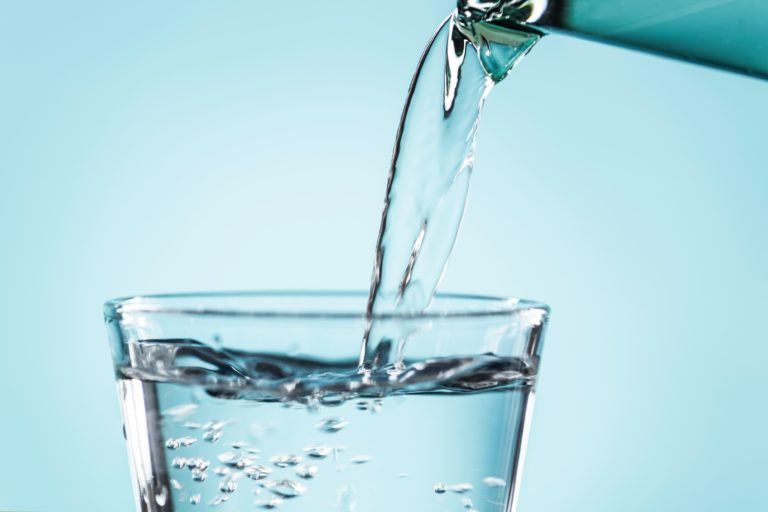

Water

Description
Water is the only true beverage. This guide will show you step by step how to make it.
Ingredients
Steps
- Add the ice cubes to an appropriately sized pot on a stovetop set to Medium heat.
- As the water boils, capture the steam into a distillery set
- Wait for the water to condense and drop down as liquid water
- Enjoy while warm. To prevent spoilage, pour the water into ice cube tray to freeze